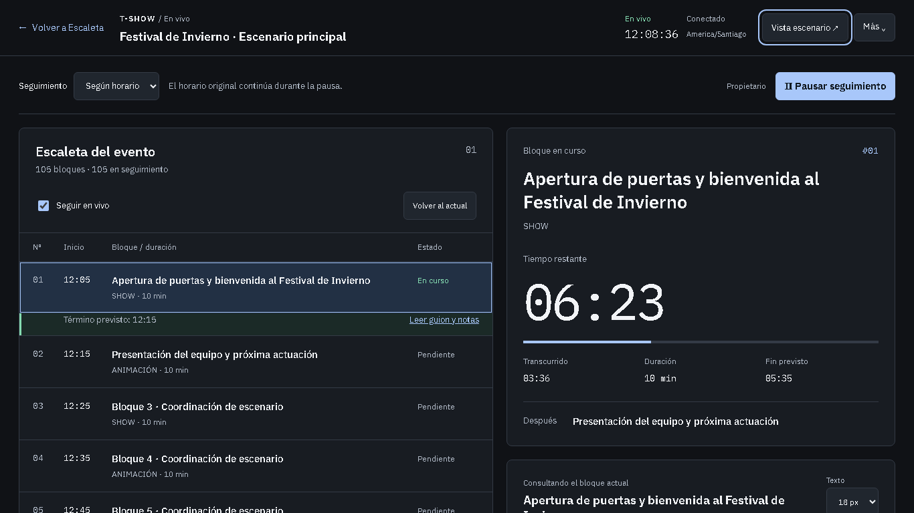

Áreas y responsables
Organiza sonido, iluminación, escenario, pantallas o camarines y deja claro quién está a cargo.
T-SHOW / OPERACIÓN EN VIVO
Prepara la escaleta, asigna responsables y comparte las indicaciones del evento en un mismo lugar. Durante el show, todos consultan el bloque actual y lo que viene.
Para productoras, equipos técnicos y organizaciones que necesitan llegar preparados.

EL PROBLEMA
Planillas, mensajes y cambios de último minuto separan a producción, técnica y escenario. T-Show reúne la pauta y el estado operativo para que el equipo decida con la misma información.
ANTES DE ABRIR PUERTAS
Prepara el evento por áreas y convierte la pauta en acciones que el equipo puede revisar y confirmar.
Organiza sonido, iluminación, escenario, pantallas o camarines y deja claro quién está a cargo.
Revisa pendientes por área, registra avances y detecta problemas antes de abrir puertas.
Guarda instrucciones técnicas junto al momento exacto en que deben ejecutarse.
Consulta convocatorias, camarines y estado de cada presentación sin perder la referencia horaria.
DURANTE EL SHOW
Producción dirige. Técnica prepara. Animación consulta. Escenario y camarines siguen el ritmo sin depender de una cadena de mensajes.
Avanza, pausa o cambia de modo con una pauta que conserva sus horarios y referencias.
Encuentra el texto y las indicaciones del bloque que corresponde al momento del evento.
Consulta la vista que necesitas: actual, anterior, siguiente y pendientes, sin entrar a editar la pauta.
EL EQUIPO CONECTADO
Usa el chat interno para conversar por evento y los avisos para enviar una instrucción concreta y confirmar que fue recibida.
Mensajes internos para el equipo autorizado, con autor, hora y bloque opcional.
Envía a una persona, un área o todo el equipo y distingue leer de confirmar recibido.
El equipo participa según su acceso. Los observadores externos no reciben información interna.
PARA ANTICIPAR
Herramientas adicionales para producción: consulta preparada sin conexión, ensayos aislados y simulación de ajustes de tiempo, según la configuración de tu evento.
La consulta sin conexión es de solo lectura; los cambios compartidos requieren reconexión.
CÓMO SE EMPIEZA
PLANES
Pro está pensado para equipos que coordinan una agenda de producciones y necesitan trabajar sobre una misma referencia.
PARA EMPEZAR
Empieza con tu primer evento.
PARA EQUIPOS DE PRODUCCIÓN
Coordina una agenda de eventos y trabaja con tu equipo en vivo.
PARA OPERACIONES INTENSIVAS
Más capacidad para una agenda intensiva.
PARA ORGANIZACIONES
Una configuración alineada con el volumen y las necesidades de tu organización.
Los precios se expresan en pesos chilenos. El plan anual se cobra por adelantado. La disponibilidad de contratación se verifica al entrar al flujo seguro de pagos.
PASSLINK · SERVICIO INDEPENDIENTE
PASSLINK es nuestra plataforma de boletaje y control de accesos. Se contrata por separado y, desde Pro en T-Show, puedes conectar el evento para consultar sus métricas.
La venta, emisión y gestión de entradas se realizan en PASSLINK. T-Show consulta las métricas del evento conectado.
PREGUNTAS
Conoce qué puede hacer cada persona del equipo y qué ocurre con la información del evento.
Reúne escaleta, horarios, guion, indicaciones y coordinación del equipo en una misma referencia para preparar y operar un evento.
Puedes invitar personas al proyecto y asignar los permisos disponibles. Producción, técnica, animación, escenario y camarines consultan la información que necesitan según su acceso.
No. El chat y los avisos internos están disponibles para miembros autorizados del evento. Los observadores por QR solo consultan la información pública habilitada.
La consulta preparada conserva la última información confirmada para lectura. Los cambios compartidos, confirmaciones y envíos requieren reconexión.
Puedes revisar una simulación de los bloques afectados antes de aplicar un ajuste. La vista previa no modifica la pauta por sí sola.
No. T-Show funciona desde el navegador en las pantallas autorizadas del equipo.
Es nuestra plataforma independiente de boletaje y control de accesos. La venta y gestión de entradas se realizan allí; T-Show permite consultar las métricas del evento conectado desde Pro o superior.
Pro y Max se renuevan automáticamente según el período elegido. Puedes cancelar la próxima renovación y conservarás el acceso hasta el final del período pagado.
HABLEMOS
Si necesitas una configuración para tu organización o quieres revisar el flujo antes de contratar, escríbenos.
LISTO PARA EL PRÓXIMO SHOW